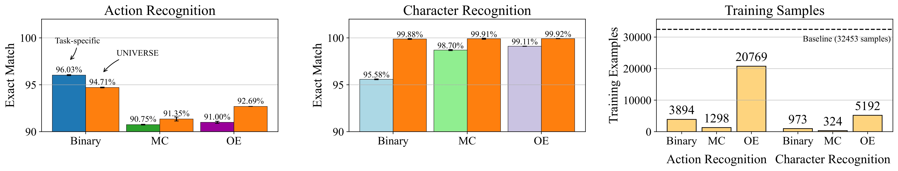

|
Mariya Hendriksen I am a Research Fellow at the University of Oxford, working with ʻŌiwi Parker Jones and Philip Torr. I am also a member of the ELLIS Society. My work focuses on multimodal machine learning for applications in neuroscience. I earned my PhD in Artificial Intelligence at the University of Amsterdam, advised by Maarten de Rijke and Paul Groth. Before that, I obtained a MSc in AI from KU Leuven and a BSc in Computational Linguistics from Novosibirsk State University. During my academic journey, I interned at Microsoft Research (Cambridge), the Gemini team, Bloomberg AI, Amazon Alexa, LIIR at KU Leuven, and ETH Zurich. Alongside my research, I am committed to fostering diverse and inclusive research communities. As such I organize the WiML Mentorship Program, served as the General Chair for the WiML at ICML 2025, and mentored through the Inclusive AI initiative. |

|
NewsPublications
Milestones & Activities
|
Research |
|  |
Mariya Hendriksen, Tabish Rashid, David Bignell, Raluca Georgescu, Abdelhak Lemkhenter, Katja Hoffman, Sam Devlin*, Sarah Parisot* Under Submission, 2025 We address the challenge of automated evaluation for world model rollouts by introducing a structured protocol and UNIVERSE, a method for adapting vision-language models through unified fine-tuning to assess temporal and semantic fidelity. |

|
Maurits Bleeker*, Mariya Hendriksen*, Andrew Yates, Maarten de Rijke (co-first author) TMLR, 2024 arXiv / bibtex / Github We propose a framework to examine the shortcut learning problem in the context of Vision-Language contrastive representation learning with multiple captions per image. We show how this problem can be partially mitigated using a form of text reconstruction and implicit feature modification. |

|
Thong Nguyen*, Mariya Hendriksen*, Andrew Yates, Maarten de Rijke (co-first author) ECIR, 2024 arXiv / Github We propose a framework for multimodal learned sparse retrieval. |

|
Mariya Hendriksen, Svitlana Vakulenko, Ernst Kuiper, Maarten de Rijke ECIR, 2023 arXiv / Github |

|
Mariya Hendriksen, Maurits Bleeker, Svitlana Vakulenko, Nanne van Noord, Maarten de Rijke ECIR, 2022 arXiv / Github |

|
Mariya Hendriksen, Ernst Kuiper, Pim Nauts, Sebastian Schelter, Maarten de Rijke SIGIR eCom, 2020 arXiv |
|
Build upon Jon Barron's template. |